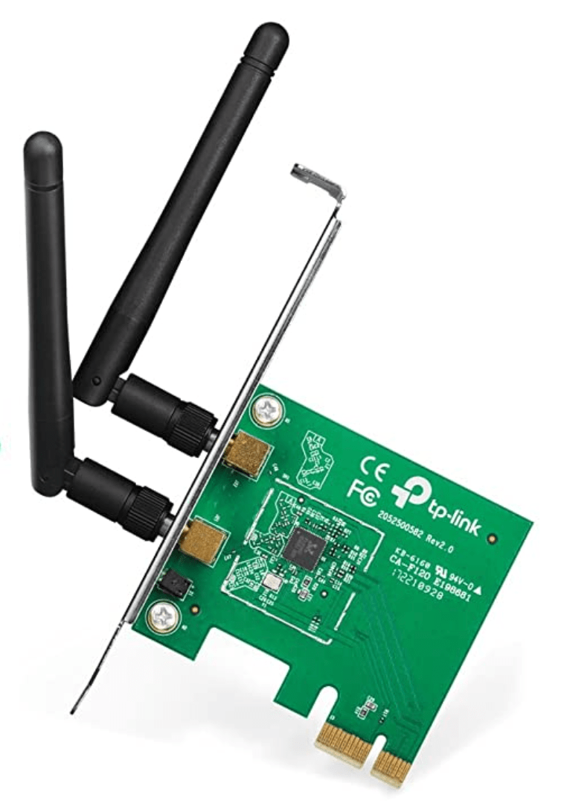
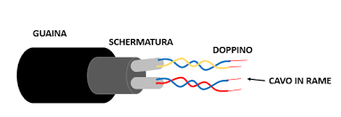
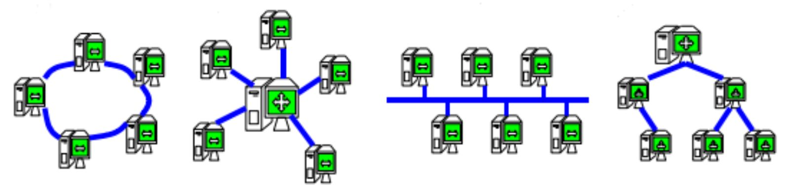
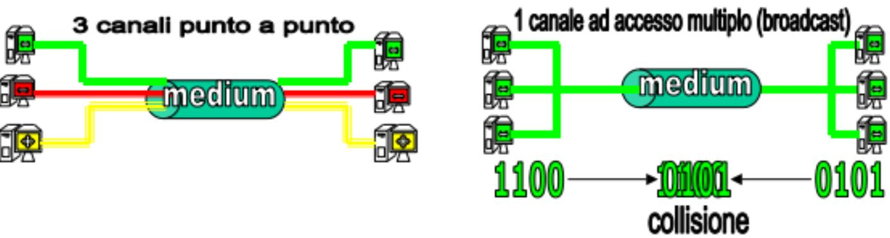
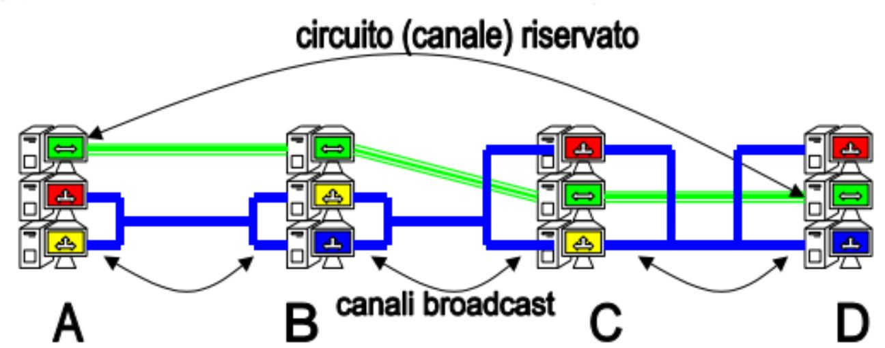
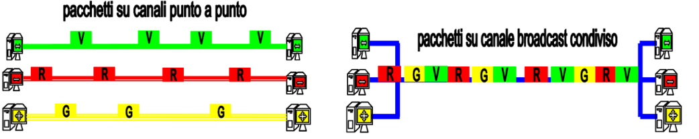

dalla capacità di trasmissione ovvero la quantità di dati che è possibile trasmettere o ricevere in un secondo, determinata dalla tecnologia usata in quel momento
Il throughput è la capacità effettiva del collegamento, che riguarda la sola trasmissione dei dati in bit dei messaggi inviati con successo al secondo da mittente a destinatario (quindi senza headers, o altri overhead).
La capacità effettiva non è da confondersi con la "capacità" del link: sia la capacità che il throughput si esprimono in bit/s, ma, mentre la prima esprime la frequenza trasmissiva massima alla quale i dati possono viaggiare, il throughput è un indice dell'"effettivo" utilizzo della capacità del link.
throughput = capacità di trasmissione – overhead del protocolli – eventuali errori di comunicazione.
Il throughput è anche influenzato dal jitter.
dal ritardo di collegamento ovvero il tempo richiesto per far transitare i dati dal mittente al destinatario, condizionato dalla distanza fisica e dai tempi di gestione stabiliti dai protocolli di comunicazione usati.
Il jitter è l'indice di variazione nel tempo del ritardo di rete (misurazione empirica delle variazioni sui RTTs dei dati trasmessi?)
se jitter elevato => ritardo NON costante, il flusso di dati non è costante quindi avrò un'esperienza meno fluida; avrò momenti in cui si trasmettono molti bit e momenti in cui invece se ne trasmettono pochi
Un jitter elevato comporta la bufferizzazione della comunicazione per consegnarla all'utente in modo costante/al ritmo giusto (Playout buffering)
Per playout buffering si intende la memorizzazione temporanea, al lato ricevente di un’applicazione, dei pacchetti in arrivo in modo da compensare la variabilità dei ritardi con cui giungono questi pacchetti ed in modo tale da consentire una riproduzione dell’informazione in essi contenuta che sia la più fedele possibile a quella presente al lato mittente dell’applicazione.
Il Round Trip Time (RTT) nelle telecomunicazioni è il tempo che intercorre tra l'invio di un segnale e la ricezione della conferma di arrivo dello stesso.
Componenti necessarie di un host per connettersi
Scheda di rete
componente hardware per codificare/trasmettere e ricevere/decodificare i dati in bit dal calcolatore alla rete, e viceversa (segnale analogico <-> digitale), nel formato che supporta il link trasmissivo
(È amministrata dai driver, ovvero componenti software del sistema operativo che permettono di fare specifiche syscall.)
ogni scheda di rete ha un proprio codice identificativo univoco (idealmente) non modificabile assegnato dai costruttori della scheda di rete-> MAC address (Medium Access Controll) a 48 bit in hex
E' dotata di:
interfaccia di collegamento al calcolatore (PCI)
Peripheral Component Interconnect (PCI) is a local computer bus for attaching hardware devices in a computer
connettore di rete: interfaccia hardware presente sul dispositivo di rete per il collegamento del dispositivo di rete al mezzo di trasmissione della rete

(& IMEI (International Mobile Equipment Identity) It’s a unique number for identifying a device on a mobile network)
Il tipo di scheda dipende dalla mezzo di trasmissione dei dati utilizzato, e i protocolli o lo standard utilizzato per la trasmissione le forniscono il nome (vedi protocolli di livello due).
protocollo = gestione di un tipo di busta
per inviare un messaggio in broadcast -> ff:ff:ff:ff:ff:ff
nomi logici per la macchina (IP)
etere <-> modalità promiscua per gli host => sniffing altrimenti msg dropped
Connettore di rete
e.g. connettore RJ45 (cavo rete PC)
interfaccia standard che permette di collegare la scheda di rete al link trasmissivo.
Link trasmissivo
(Per propagazione e trasmissione di segnale tra le varie schede che realizza l’infrastruttura fisica della rete)
(per ogni medium un protocollo diverso)
mezzo fisico di trasmissione sul quale viaggiano (e si propagano) le informazioni sotto forma di segnale analogico.
Possono essere fili di rame, cavi coassiali (tipo di cavi elettrici), fibre ottiche o l’ambiente nel caso delle onde radio.
Cavi o fili metallici: permettono di codificare l’informazione digitale mediante variazioni della corrente elettrica (segnale elettrico), ovvero tramite il trasferimento fisico degli elettroni.
Inizialmente la somma delle cariche dei protoni nel nucleo è pari alla somma delle cariche degli elettroni (assestamento randomizzato), pertanto le esponiamo ad una differenza di potenziale alternata (da un estremo all'altro, e viceversa)(varia in modo sinusoidale)(aggiungendo altre cariche da una fonte di energia) in modo tale da sfruttare il lavoro che gli elettroni compiono per migrare da un capo all'altro con una velocità d'impulso quasi pari a quella della luce (elettroni pendolo). La corrente elettrica pertanto viaggia al moto opposto degli elettroni.
(+ energia usata per trasmissione, + calore dovuto alla dispersione termica del segnale => + ritardo perchè il segnale deve essere ricostruito e ritrasmesso => usare bassa energia)

Possono essere doppini in rame intrecciati o cavi coassiali.
Prestazioni 1-2 Gbit/s
economici ma problemi per coprire lunghe distanze...
suscettibili ad interferenze (i.e. onde radio esterne) => schermature isolanti => separato da onde
fibre ottiche
cavi dove passano onde luminose (che rimbalzano su specchi)(trasmissione di segnali ottici) che vengono codificate in base a differenti frequenze di onde le quali per loro natura non si scontrano quindi non si collidono quindi più onde contemporaneamente
Una comunicazione ottica è una qualunque forma di telecomunicazione che usa la luce come mezzo di trasmissione.
Presentano le prestazioni migliori per capacita’ di rete (migliaia di Gbit/s), no dispersione del segnale, non subiscono interferenze esterne, ma difficili da maneggiare e costose
Wireless (utopica) trasmissione via etere
le reti wireless sono dei broadcast naturali.
i segnali vengono propagati(radiati) tramite onde radio/elettromagnetiche che viaggiano nello spazio
Hanno il vantaggio di permettere una comunicazione in mobilita’, ma presentano problemi circa le interferenze (e quindi gli errori), il problema dell’attenuazione del segnale con la distanza (1/(d^n)) e la minor capacita’ di trasmissione.
comunicazione tramite antenne speciali che sanno focalizzare le trasmissioni radiofoniche
Classificazione reti
per estensione geografica
LAN
WAN (Wide Area Network) in grado di coprire nazioni e continenti
Internet è una rete globale composta dall’unione di reti di vari tipi, connesse tra loro e conformi a un determinato insieme di regole di comunicazione comuni: i protocolli di Internet.
per topologia (topologia = pattern riconoscibile)(schemi di connessione dei dispositivi)
infrastruttura
struttura di connessione tramite i collegamenti fisici tra tutti i dispositivi di una rete
Punto a punto: connessione diretta tra due host di una stessa rete (semplici regole di comunicazione)
(A connessioni multiple)
Completamente connessa con cammini ridondanti: esiste un collegamento diretto da ogni host ad ogni host. Massimo grado di ridondanza (possibilità di lavorare con n guasti => + affidabilità) e tolleranza ai guasti ma costi elevati.
Minimamente connessa: col minor numero possibile di collegamenti (mST) esiste un cammino da ogni host ad ogni host che eventualmente passa per nodi intermedi. Costi minimi ma grande rischio di partizionamenti di rete visto l’assenza di ridondanza. (e.g. n host collegati con n-1 collegamenti)(prima a sx ha grado di ridondanza 1 perchè anche se si rompe 1 collegamento gli host rimangono comunque connessi)

parzialmente connesso (Minimum Spanning Tree (o più))
Partizione di rete: isole di host non connesse; gruppo di host isolati dagli altri.
ad anello (ring)
Ogni host e’ connesso direttamente ai suoi host adiacenti. Esiste quindi un cammino da ogni host ad ogni host. Ogni componente può comunicare con ogni altro componente inviando i segnali attraverso la sequenza di connessioni in senso orario o antiorario.
Ha grado di ridondanza pari a uno: se cade un collegamento la rete risulta comunque minimamente connessa e funzionante
a stella
rete minimamente connessa (mST (minimum Spanning Tree)); gli host non sono connessi direttamente bensì si connettono ad un dispositivo centrale (uno switch o un hub) che propaga il segnale in tutte le direzioni. Questa topologia presenta un alto rischio di partizionamento di rete ed il dispositivo centrale e’ un single point of failure: se si rompe il componente centrale gli host sono tutti partizionati.
Single point of failure: elemento critico tale che se si rompe non c'è più comunicazione (solitamente nascosto al pubblico)
per definizione il mST non presenta cicli
a bus (mST)
Dispositivi connessi ad un bus comune a tutti; non c’e’ ridondanza; inoltre si presenta il problema di gestire l’accesso al mezzo di comunicazione condiviso: infatti la sovrapposizione di due segnali elettrici comporta la distruzione di entrambi (bus è il bottleneck e non viene tollerata la compresenza di due segnali elettrici diversi => protocollo (e.g. randomizzazione per accesso al medium))
ad albero
organizzazione gerarchica delle connessioni in cui ogni nodo puo’ comunicare direttamente con i suoi figli diretti o col suo genitore.
a grafo (o a maglia)
combinazione di queste topologie diverse collegate tra loro
Canali (logici) di comunicazione di rete - virtualizzazione/visione astratta del mezzo fisico di trasmissione
Un singolo mezzo fisico trasmissivo può essere visto come un insieme di canali logici virtuali.
Esistono due tipologie di canale:
Canale punto a punto
canale logico viene riservato (quindi a loro completa disposizione ma molti tempi morti inutilizzati quindi spreco risorse) per far comunicare direttamente due soli host. Non bisogna specificare indirizzo del destinatario, simple access's rules
filtro passabanda
isolare frequenze tramite filtro
ogni colore è una frequenza diversa per consentire + comunicazioni parallele
Canale ad accesso multiplo (broadcast)
Tutti i dispositivi ricevono e trasmettono sullo stesso unico canale, e ciò che trasmette uno arriva a tutti. Il canale richiede arbitraggio per evitare collisioni distruttive dovute alla stessa frequenza dei segnali, quindi alla sovrapposizione di segnali che transitano nello stesso momento sul canale, e che porta alla distruzione di entrambi (problematica da gestire anche nei canali punto a punto (signaling vs polling)).
Occorre specificare MAC del mittente e destinatario ("da chi e per chi?")(indirizzamento esplicito per ogni pacchetto trasmesso)

Reti a commutazione di circuito (circuit switched)
Prima di far comunicare due host si crea/si riserva un circuito(insieme) di canali logici end-to-end per tutta la durata della comunicazione (e.g. linea telefonica). Pertanto le linee non sono precostruite bensì sono frequenze in quel momento disponibili tra le varie centrali di commutazione che compongono i circuiti. Se non c'è alcuna frequenza disponibile allora la linea è intasata
minor ritardo di comunicazione visto che le risorse sono allocate per tutto il tempo, ma bisogna pagare per tutto il tempo che si è connessi anche se non si trasmettono dati sul canale(e.g. momenti di sospiro)

Reti a commutazione di pacchetto (packet switched (e.g. rete internet))
I dati vengono divisi in pacchetti indipendenti (ogni pacchetto deve contenere gli indirizzi di mittente e destinatario), spediti sul canale ad accesso multiplo ed affidati a dispositivi chiamati commutatori di pacchetto che li faranno arrivare a destinazione. In questo modo la rete risulta utilizzata al meglio fino a saturazione, si trasmette solo quando si ha necessita’ di farlo e non si allocano risorse inutilmente.
+ ritardo di comunicazione ma - costi perchè sono allocati più utenti sullo stesso canale condiviso e l'utente paga per numero di pacchetti che ha trasmesso e ricevuto
Il canale viene condiviso tra più flussi di pacchetti, quindi sono richieste meno risorse (canali)
(È possibile che alcuni pacchetti arrivino nell’ordine sbagliato o vengano persi (e.g, quando buffer ricezione degli host intermedi è pieno(TOMOVE store and forward da parte dei router (per velocizzarli sono esautorati ed è compito del mittente (TCP => e del destinatario (protocollo end-to-end)) la ritrasmissione (e la notifica) del pacchetto), e ritmi di entrata diversi da ritmi di uscita)))

Servizi orientati alla connessione e non
I servizi offerti dalle reti a commutazione di pacchetto dipendono dalle proprieta’ dei protocolli utilizzati e possono essere:
Connection oriented: i dati vengono spediti e ricevuti in ordine, inoltre arrivano senza errori e vengono rispediti i pacchetti andati perduti (quindi servizi che non perdono i pacchetti (connessione affidabile))(TCP)
Connection-less: : i dati vengono affidati alla rete che per definizione e’ un servizio non orientato alla connessione; i pacchetti potrebbero seguire strade diverse per arrivare a destinazione e arrivare disordinati rispetto all’ordine di invio, non arrivare o arrivare sbagliati/corrotti (UDP)
Protocolli e stack ISO/OSI (protocolli di rete organizzati a livelli)
Un protocollo e’ un insieme di regole sintattiche (e.g. forma) e semantiche (e.g. significato della forma), e definiscono il formato dei messaggi scambiati e le decisioni su quando e come inviare i messaggi
Un protocollo è creato per risolvere una specifica problematica di rete; e' controproducente creare un unico protocollo rigido che copra tutte le possibili finalità di una comunicazione (e.g. UDP o TCP?). Ha invece senso definire classi di protocolli, deputate a gestire determinate funzioni della comunicazione.
L'obiettivo è fornire compatibilità tra dispositivi diversi conformi però ad uno stesso standard.
standard ISO/OSI
Le classi di protocolli sono raggruppate in (7) livelli organizzati a stack (per scalabilità (push) e modularità), e ogni livello gestisce una fase della comunicazione. Un livello x fornisce servizi/astrazioni al livello x+1, tramite un'interfaccia comune a tutti i protocolli del livello sovrastante, e richiede servizi/astrazioni offertogli dal livello x-1, tramite un'interfaccia comune a tutti i protocolli del livello sottostante. Se violassimo queste regole si tenderebbe allo spaghetti code e duplicazione del codice.
livello applicazione
fornisce alle applicazioni in esecuzione su calcolatori remoti le primitive per comunicare. A questo livello le applicazioni si scambiano dati tramite i protocolli di questo livello, e questi pacchetti di informazione sono detti messaggi
livello presentazione
risolve eventuali eterogeneita’ del formato dei dati
livello sessione
mantiene e gestisce lo stato attuale del collegamento tra due applicazioni remote.
livello trasporto
fornisce i servizi orientati alla connessione e non, controlla la congestione della rete (TOCHECK dei buffer o del prossimo buffer?). In questo livello i messaggi vengono spezzati in segmenti/datagrammi.
livello rete (IP, Internet Protocol)
Si occupa di frammentazione, indirizzamento (scrivere gli indirizzi logici del mittente e destinatario) e instradamento dei datagrammi TOCHECK pacchetti o datagrammi? Solo IPv4 frammenta?
livello data link (MAC/LLC)
Regola l’accesso al mezzo (canale) trasmissivo (arbitraggio, chi trasmette quando), e verifica (controlla eventuali errori) la corretta trasmissione dei pacchetti tra nodi adiacenti all'host nella rete. TOCHECK A questo livello i datagrammi sono divisi in frame
Tecnologie per schede di rete (protocolli di livello due)
Ethernet
E' un protocollo usato nelle reti locali cablate (adattatore di tipo cablato). La scheda di rete ascolta il canale mentre trasmette il segnale (collision detection). Se viene rilevata una collisione interrompe la trasmissione e riprova dopo un tempo random.
IEEE 802.11 (o Wi-Fi)
Protocolli MAC (Medium Access Control) nelle reti wireless
Per le reti wireless, non possiamo usare gli stessi protocolli MAC delle reti cablate. Nelle reti wireless, ho il problema delle collisioni dovuto non solo alla comunicazione nello stesso momento, ma anche alla comunicazione nello stesso luogo. La scheda di rete ascolta il canale radio (carrier sensing) e trasmette solo se nessuno sta già trasmettendo (collision avoidance), ma è diverso da ethernet perché non rimane in ascolto mentre trasmette il segnale. Con Wi-Fi non ti puoi accorgere di aver fatto collisione (due dispositivi trasmettano contemporaneamente distruggendo il segnale di entrambi) perchè c'è l'impossibilità pratica di realizzare la rilevazione di collisioni in atto durante la fase di trasmissione poichè non si riesce a controllare fisicamente tutte l'etere. Per prevenire le collisioni si dilazionano le trasmissioni nel tempo.
Token ring & Single point of failure
Utilizzato con reti con topologia ad anello (cablato), esiste un frame speciale detto token che viene passato come un “testimone” tra i dispositivi, e solo chi detiene il token ha diritto di iniziare una comunicazione. Poi lo si passa al dispositivo successivo. Se chi riceve un messaggio possiede il token, esso può interpretare questo segnale come ACK implicito. In questo modo si annullano le collisioni (garantisce la Quality Of Service). Un problema di questo protocollo è la perdita (o peggio, al ritardo) del token. Infatti se questo viene perso, passato il token rotation time (timeout) di due host, bisogna impedire che se ne rigeneri più di uno (e.g. se uno non sa che un altro lo sta già creando => pochi (idealmente uno) nodi con timeout e prerogativa di creare token (a discapito dell'efficienza della struttura)).
livello fisico
Si occupa di codifica&trasmissione e decodifica&ricezione dei segnali <-> bit (tradurre i segnali in bit, e viceversa) sul canale trasmissivo